Bei der Auswahl und Zusammenstellung von Auffang-, Arbeitsplatzpositionierungs- oder Rückhaltesystemen müssen u. a die folgenden Aspekte berücksichtigt werden:
Bei dem Risiko einer Kantenbeanspruchung der Ausrüstung während eines Auffangvorgangs sind dafür geeignete Bestandteile auszuwählen. Dies ist der Fall, wenn z. B. die Anschlageinrichtung nicht über der Benutzerin oder dem Benutzer, sondern in Standplatzebene angeordnet ist.
7.2.1 Bei dem Risiko einer Kantenbeanspruchung der Ausrüstung während eines Auffangvorgangs sind dafür geeignete Bestandteile auszuwählen. Dies ist der Fall, wenn z. B. die Anschlageinrichtung nicht über der Benutzerin oder dem Benutzer, sondern in Standplatzebene angeordnet ist.
Es sind Höhensicherungsgeräte, mitlaufende Auffanggeräte einschließlich beweglicher Führung und Verbindungsmittel mit Falldämpfer auszuwählen, die den zu erwartenden Beanspruchungen über eine Kante standhalten. Angaben zur Art der Kantenbeanspruchung, über die zulässige Anordnung des Anschlagpunktes und die erforderliche lichte Höhe unterhalb des Standplatzes der Benutzerinnen und Benutzer sind in der Gebrauchsanleitung des Herstellers enthalten.
Zudem ist zu berücksichtigen, dass generell ein Pendelsturz über die Absturzkante vermieden wird. Ein Pendelsturz kann zum Versagen der Ausrüstung durch die Vergrößerung der Fallstrecke, zu nicht kalkulierbaren Auffangstrecken und zum Anprallen an Teilen der Umgebung führen. Für die Vermeidung von Pendelstürzen empfiehlt es sich, anstelle von Einzelanschlagpunkten Anschlagkonstruktionen zu verwenden, die parallel zur Absturzkante verlaufen.
7.2.2 Bei der Verwendung von PSA gegen Absturz mit anderen PSA, z. B. Atemschutzgerät, Rettungsweste, Schutz- oder Warnkleidung ist darauf zu achten, dass eine mögliche gegenseitige Beeinträchtigung der jeweiligen Schutzwirkung vermieden wird. Daher sind bereits vom Hersteller konfektionierte Kombinationen zu bevorzugen, die auf ihre jeweilige Funktionsfähigkeit geprüft und zugelassen sind.
Beispiele:
Atemschutz und PSA gegen Absturz
Die Funktion des Atemschutzgerätes kann durch einen Auffangvorgang beeinträchtigt werden. Kurze Fallstrecken reduzieren dieses Risiko. Es wird empfohlen, Auffanggurte mit integrierter Tragevorrichtung für Druckluftflaschen zu verwenden.
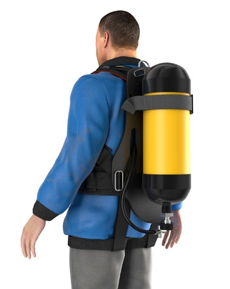
Abb. 19 Beispiel Auffanggurt mit integrierter Tragevorrichtung für Atemschutzgerät
Rettungsweste und PSA gegen Absturz
Um die vollständige Entfaltung des Auftriebskörpers der Rettungsweste nach einem Sturz ins Wasser zu gewährleisten, ist die Rettungsweste über dem Auffanggurt zu tragen.
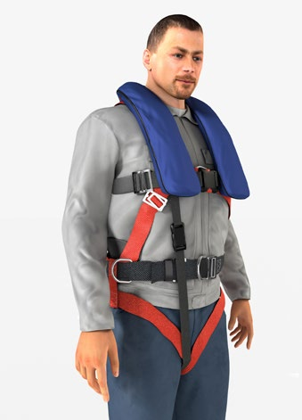
Abb. 20a Beispiel eines Auffanggurtes mit Rettungsweste (Vorderansicht)
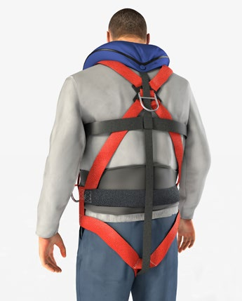
Abb. 20b Beispiel eines Auffanggurtes mit Rettungsweste (Rückansicht)
Schutzkleidung und PSA gegen Absturz
Bei einem Auffangvorgang besteht das Risiko der Beeinträchtigung der Funktion des Auffanggurtes und der Schutzwirkung der Schutzkleidung (z. B. Chemikalienschutzanzüge oder Warnkleidung). Daher wird empfohlen, Schutzkleidung mit integriertem Auffanggurt zu verwenden.
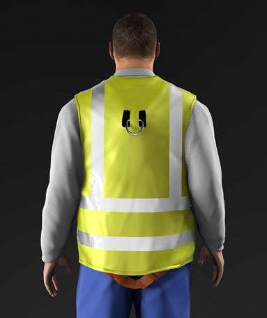
Abb. 21 Beispiel Auffanggurt in Schutzkleidung integriert
Die Entscheidung, ob sicherheitstechnische Funktionen beeinträchtig werden, liegt bei der Prüf- und Zertifizierungsstelle in Zusammenarbeit mit dem Hersteller und Anwendern. Ggf. sind die betroffenen Funktionen in einer Nachprüfung zu verifizieren oder die Kombination sogar als eigenständiges Produkt zu zertifizieren.
7.2.3 Bei der Benutzung von PSA gegen Absturz mit Industrieschutzhelmen besteht im Falle eines Auffangvorganges das Risiko der Kopfverletzung durch das Herabfallen des Schutzhelmes. Daher wird empfohlen, Schutzhelme mit Drei- oder Vierpunktkinnriemen aus dem Bergsport zu verwenden, die zusätzlich auch die Anforderungen nach DIN EN 397 erfüllen.
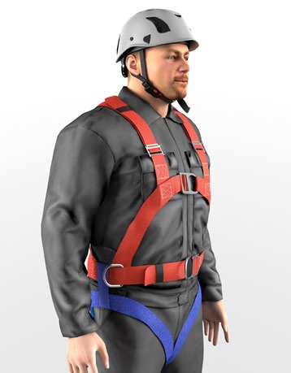
Abb. 22 Beispiel Industrieschutzhelm nach DIN EN 397 mit Vierpunktkinnriemen
7.2.4 Sicherungstechniken/-methoden aus dem Bergsport dürfen nicht als Maßnahme zum Schutz gegen Absturz angewendet werden.
7.2.5 Zum Schutz gegen Absturz beim Risiko des Herauskatapultierens aus fahrbaren Hubarbeitsbühnen sind Ausrüstungen nach DIN 19427 zu verwenden. Diese Ausrüstungen (z. B. Höhensicherungsgeräte oder längeneinstellbare Verbindungsmittel mit Falldämpfer) haben eine maximale Systemlänge von 1,8 m und sind mit Verbindungselementen ausgestattet, die mit einem "A" oder einem Piktogramm für die Verbindung mit einem Auffanggurt gekennzeichnet sind.
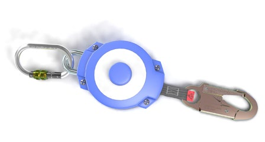
Abb. 23 Höhensicherungsgerät mit ausgelösten Sturzindikator
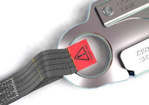
Abb. 24 Ausgelöster Sturzindikator am ein- und ausziehbaren Verbindungsmittel eines Höhensicherungsgerätes
7.2.6 Bei der Auswahl empfehlen sich Ausrüstungen, die mit einem Sturzindikator ausgestattet sind. Dieser zeigt an, wenn das System durch einen Auffangvorgang beansprucht wurde (siehe Abbildungen 23-26).
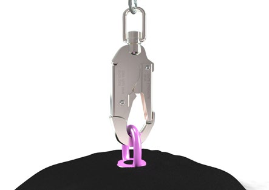
Abb. 25 Karabinerhaken mit Sturzindikator am Wirbel
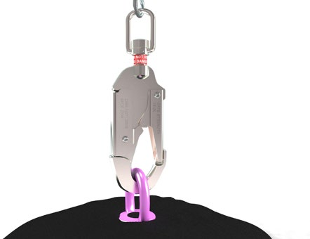
Abb. 26 Ausgelöster Sturzindikator des Karabinerhakens
Zur Gewährleistung der sicheren Funktion eines Auffangsystems (Auffangen der Person ohne Aufprallen auf den Boden oder Teile der Umgebung) ist eine ausreichende lichte Höhe unterhalb des Standplatzes erforderlich. Genaue Angaben zu dem erforderlichen Freiraum unterhalb der Füße sind in der Gebrauchsanleitung des Herstellers aufgeführt.
Bei dem Auffangsystem mit Falldämpfer errechnet sich beispielsweise der erforderliche Freiraum unterhalb des Standplatzes aus der jeweiligen Auffangstrecke (z. B. Fallstrecke und Aufreißlänge des Falldämpfers) und einem Sicherheitsabstand von 1 m. Der Sicherheitsabstand berücksichtigt u. a. das Verschieben der Auffangöse am Gurt und die Dehnung des Gurtmaterials (siehe nachfolgendes Beispiel).
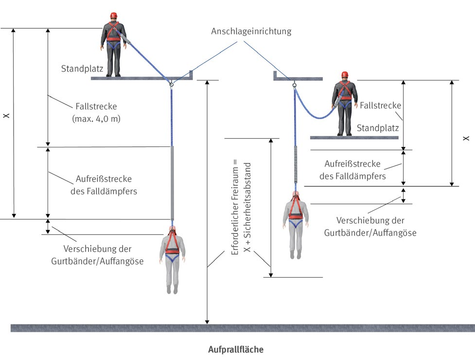
Skizze: "Erforderlicher Freiraum" für ein Auffangsystem mit Falldämpfer
Für Rückhaltesysteme empfehlen sich zur Vermeidung von Absturzrisiken Verbindungsmittel mit fester Länge oder maximal einzustellender Länge, die jeweils kürzer sind als die Entfernung zur Absturzkante.
Die Verwendung von horizontalen Anschlageinrichtungen, die parallel zur Absturzkante verlaufen, ist sinnvoll. Dadurch kann mit einer gleichbleibenden Seillänge das Erreichen der Absturzkante verhindert werden. Ein ständiges Anpassen der Verbindungsmittellänge ist dabei nicht erforderlich (siehe Abbildung 18).
Ein Auffanggurt besteht aus Gurtbändern, Beschlagteilen, Verschluss- und Einstellelementen, die so angeordnet und zusammengesetzt sind, dass eine Person bei einem Sturz und dem Auffangen gehalten wird.
Auffanggurte sind mit hinterer und/oder vorderer Auffangöse ausgestattet, die über dem Körperschwerpunkt liegen.
Auffanggurte mit hinterer Auffangöse sind für Arbeiten geeignet, bei denen sich der Anschlagpunkt oberhalb oder hinter der zu sichernden Person befindet. Entsprechend sind Auffanggurte mit vorderer Auffangöse eher für Arbeiten geeignet, bei denen sich der Anschlagpunkt oberhalb oder vor der zu sichernden Person befindet.
Es gibt auch Auffanggurte mit einer mittig am Bauchgurt angeordneten Steigschutzöse, die ausschließlich für die Verwendung eines mitlaufenden Auffanggerätes einschließlich einer festen Führung (Steigschutzsystem) vorgesehen sind (siehe Abbildungen 8 und 27). Bei der Befestigung von z. B. Höhensicherungsgeräten oder Verbindungsmitteln mit Falldämpfern an der Steigschutzöse im Bauchbereich besteht eine große Verletzungsgefahr der Wirbelsäule bei einem Auffangvorgang.
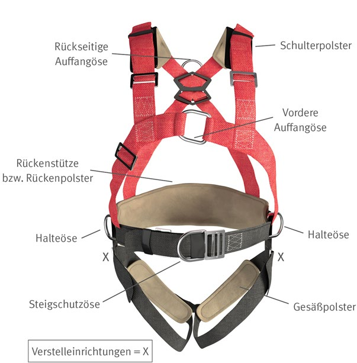
Abb. 27 Beispiel eines Auffanggurtes mit vorderer und rückseitiger Auffangöse, seitlichen Halteösen
und einer Steigschutzöse. Der Gurt ist zusätzlich mit Schulter-, Beingurt- und Rückenpolstern ausgestattet.
Auffanggurte, die für die Verwendung in Haltesystemen oder zur Arbeitsplatzpositionierung bestimmt sind, besitzen zusätzliche seitliche Halteösen. Diese sind ebenfalls nicht für Auffangfunktionen geeignet.
Auffangösen sind mit dem Großbuchstaben "A" (siehe Abbildung 28) gekennzeichnet. Es ist möglich, dass eine Auffangöse aus 2 Gurtschlaufen gebildet wird, die aber nur gemeinsam benutzt werden dürfen und entsprechend gekennzeichnet sind (siehe Abbildung 29).
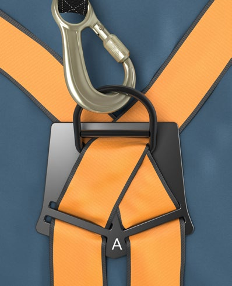
Abb. 28 Hintere Auffangöse mit Großbuchstaben "A" gekennzeichnet
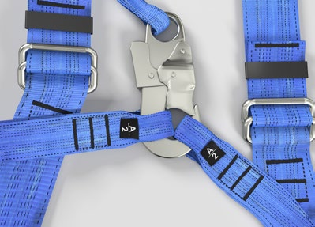
Abb. 29 Vordere Auffangöse bestehend aus zwei Gurtschlaufen
Auffanggurte müssen individuell auf den Körper eingestellt werden können, um die ergonomischen und sicherheitsrelevanten Anforderungen zu erfüllen. Daher ist Personen mit regelmäßigem Einsatz ein Auffanggurt zur alleinigen Benutzung zur Verfügung zu stellen.
Bei der Auswahl des Gurtes sind vor allem die Passform, die erforderlichen Ösen und die Einstellmöglichkeiten maßgeblich. Da der Auffanggurt grundsätzlich für eine Belastung mit 100 kg geprüft wird, sollte bei höheren zu erwartenden Belastungen eine Abstimmung mit dem Hersteller erfolgen (siehe auch Abschnitt 5.1).
Das Gewicht der Person sowie zusätzliche Lasten (z. B. aus Material, Werkzeug, Kleidung) sind vor allem bei der Auswahl des Gesamtsystems, speziell des energieabsorbierenden Bestandteils, zu berücksichtigen.
Hinweis: Für Frauen gibt es spezielle Auffanggurte, deren Gurtbandverlauf der weiblichen Körperform angepasst ist.
Hinweis: Es empfiehlt sich, die Passform durch Trage- und Hängeversuche zu überprüfen.
Auffanggurte können in Kleidungsstücke integriert sein. Bei häufigem oder längerem Tragen sind extra breite, gepolsterte Gurtbänder sowie integrierte bzw. zusätzliche Rückenstützen geeignet, die ergonomische Anforderungen an einen hohen Tragekomfort erfüllen.
Zur einfacheren Verbindung der rückwärtigen Auffangöse mit einem Höhensicherungsgerät oder einem Verbindungsmittel mit Falldämpfer finden Auffanggurte mit einer Rückenösenverlängerung Anwendung.
Hinweis: Es ist jedoch darauf zu achten, dass bei einem Auffangsystem mit Falldämpfer die zulässige Gesamtlänge des Systems nicht überschritten wird. Eine Verwendung des fest verbundenen Verbindungsmittels mit mitlaufenden Auffanggeräten ist unzulässig.
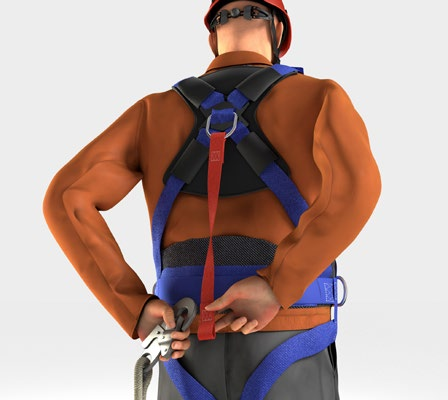
Abb. 30 Beispiel für einen Auffanggurt mit einem fest
verbundenen Verbindungsmittel an der rückwärtigen Auffangöse
Ein Haltegurt besteht aus einem Gurtband mit Verschluss- und Einstellelementen, einer Rückenstütze und mindestens einer Halteöse zum Rückhalten. Zur Arbeitsplatzpositionierung ist ein Haltegurt zu verwenden, der mit zwei Halteösen ausgestattet ist (siehe Abbildung 31).
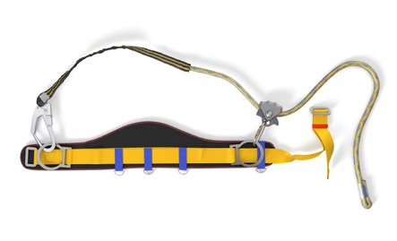
Abb. 31 Haltegurt mit einstellbarem Verbindungsmittel
Haltegurte sind zum Auffangen abstürzender Personen und zur Rettung von Personen nicht geeignet und deshalb für diese Verwendung unzulässig. Es besteht dabei unter anderem die Gefahr der Wirbelsäulenverletzung (siehe Abbildung 32).
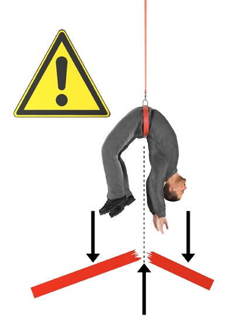
Abb. 32 Gefahr der Wirbelsäulenverletzung bei der Benutzung von Haltegurten zum Auffangen
Haltegurte sind nur zum Zweck des Rückhaltens (Rückhaltesystem, siehe Abbildungen 16, 17 und 18) bzw. der Positionierung (Arbeitsplatzpositionierungssystem, siehe Abbildungen 13, 14 und 15) geeignet. Voraussetzung ist hierbei eine Standfläche, deren Neigung und Oberflächenbeschaffenheit das Risiko des Ausrutschens oder Abrutschens ausschließt.
Die gleichzeitige Bereitstellung von Haltegurten und Auffanggurten in einem Arbeitsbereich sollte aufgrund der Verwechslungsgefahr vermieden werden. Für diese Fälle wird die alleinige Verwendung eines Auffanggurtes mit integrierter Haltefunktion empfohlen.
Verbindungsmittel können aus Chemiefasern (Seilen und Bändern), Drahtseilen oder Ketten hergestellt sein. Sie sind mit geeigneten Endverbindungen ausgestattet, z. B. Karabinerhaken, Schlaufen. Es gibt in der Länge unveränderliche oder einstellbare Verbindungsmittel.
Als textile Verbindungsmittel finden beispielsweise Verwendung:
Zur Vermeidung der Gefahr der Schlaffseilbildung und zur Reduzierung der Fallstrecke empfehlen sich Verbindungsmittel mit einer Längeneinstellvorrichtung.
Soweit mit erhöhter Schmutzeinwirkung oder UV-Strahlung zu rechnen ist, sind Verbindungsmittel aus geflochtenen Seilen (Kernmantelseile) zu bevorzugen. Aufgrund des schützenden Mantels bleibt der überwiegend tragende Kern des Seiles vor äußeren Einwirkungen weitgehend geschützt.
Es gibt Verbindungsmittel mit integriertem Falldämpfer (siehe hierzu Abbildungen 38 und 40). Diese Verbindungsmittel sind verwendungsfertig und dürfen in ihrer Länge durch Anfügen zusätzlicher Bestandteile nicht verändert werden. Dies gilt auch für Verbindungsmittel mit energieabsorbierenden Eigenschaften (siehe Abbildung 33).
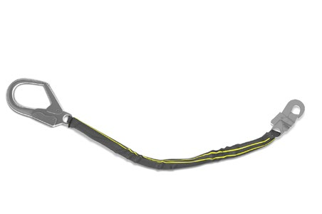
Abb. 33 Verbindungsmittel mit energieabsorbierenden Eigenschaften
Zum Fortbewegen unter Absturzgefahr eignen sich zweisträngige Verbindungsmittel (Y-Seil) mit integriertem Falldämpfer (siehe Abbildung 34). Dabei ist der Falldämpfer immer direkt an der Auffangöse des Auffanggurtes anzuschlagen.
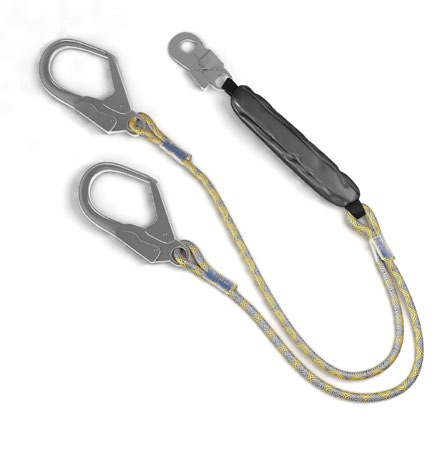
Abb. 34 Zweisträngiges Verbindungsmittel mit integriertem Falldämpfer
Verbindungsmittel nach DIN EN 358 sind Bestandteil von Rückhalte- bzw. Arbeitsplatzpositionierungssystemen (siehe Abbildungen 17 und 18), bestehend aus Chemiefaser-Seilen, Drahtseilen oder Chemiefaser-Bändern mit Endverbindungen und Längeneinstellvorrichtung. Sie dienen dem Verbinden eines Haltegurtes mit einem Anschlagpunkt oder dem Umschlingen eines Bauwerkteils, um ein Halten oder Positionieren zu ermöglichen.
Verbindungsmittel für Haltegurte sind nicht zu Auffangzwecken, d. h. für die Verwendung in einem Auffangsystem, geeignet. Sie können mit einer Längeneinstellung ausgerüstet sein (siehe Abbildungen 13, 14, 15 und 16).
Eine Längeneinstellvorrichtung empfiehlt sich grundsätzlich zur genauen Anpassung an die jeweilige Arbeitssituation.
Mitlaufende Auffanggeräte bilden mit der beweglichen Führung (Chemiefaserseil/Drahtseil) eine verwendungsfertige Einheit. Die bewegliche Führung hat am freien Ende eine Endsicherung, die ein unbeabsichtigtes Trennen des Gerätes von der Führung verhindert (siehe Abbildung 5).
Das Auffanggerät begleitet die Person während der Auf- und/oder Abwärtsbewegung automatisch ohne manuelle Betätigung und blockiert bei einem Sturz.
Die energieabsorbierende Funktion erfolgt z. B. durch Klemm- bzw. Reibfunktion zwischen Auffanggerät und Führung. Sie kann aber auch durch einen Falldämpfer in dem Verbindungsmittel (siehe Abbildung 35) oder in der Führung erfolgen.
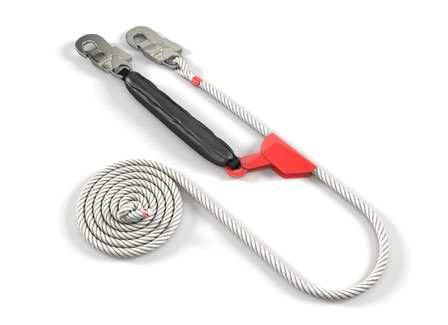
Abb. 35 Mitlaufendes Auffanggerät an beweglicher Führung; hier bildet der Falldämpfer die Verbindung zum Auffanggurt
Es gibt auch mitlaufende Auffanggeräte, die sich an beliebiger Stelle der beweglichen Führung anfügen und lösen lassen (siehe Abbildungen 36 und 37). Die sichere Funktion ist nur dann gewährleistet, wenn das mitlaufende Auffanggerät an der vom Hersteller vorgegebenen beweglichen Führung und in der bestimmungsgemäßen Funktionsrichtung angefügt wird. Zudem muss die eindeutige Zuordnung des lösbaren mitlaufenden Auffanggerätes zur beweglichen Führung gegeben sein (siehe Abbildung 3).
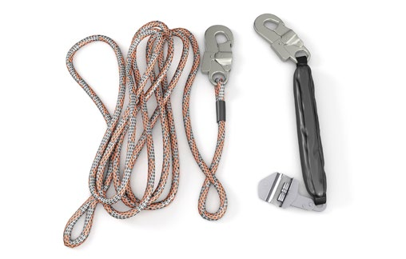
Abb. 36 Lösbares mitlaufendes Auffanggerät mit dazugehöriger beweglicher Führung
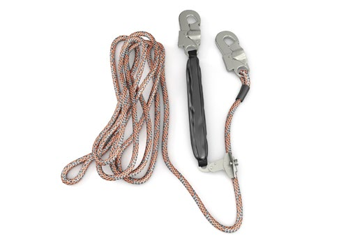
Abb. 37 Bewegliche Führung mit angefügten mitlaufenden Auffanggerät
Darüber hinaus dürfen nur die vom Hersteller vorgesehenen Verbindungsmittel bzw. Verbindungselemente als Zwischenverbindung zwischen Auffanggurt und Auffanggerät verwendet werden.
Falldämpfer können in Verbindungsmittel integriert (siehe Abbildungen 38 und 40) oder als Verbindungsmittel ausgeführt sein (siehe Abbildungen 33 und 39). Diese dürfen in der Regel in ihrer Länge (z. B. durch Anfügen zusätzlicher Bestandteile) nicht verändert werden. Ausnahmen sind in der Gebrauchsanleitung angegeben.
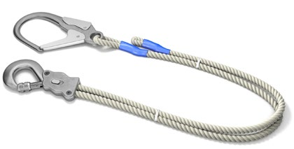
Abb. 38 Reibungs-Falldämpfer mit Verbindungsmittel, der Falldämpfer ist in einem Karabinerhaken integriert
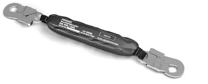
Abb. 39 Beispiel für einen Aufreiß-Falldämpfer (Bandfalldämpfer)
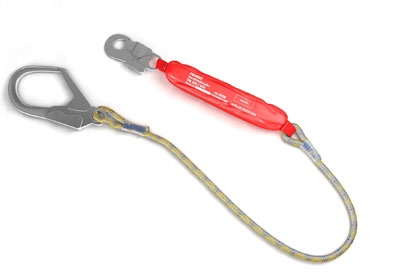
Abb. 40 Verwendungsfertiger Aufreiß-Falldämpfer (Bandfalldämpfer) im Verbindungsmittel integriert
Es gibt Reibungs-Falldämpfer und Aufreiß-Falldämpfer (Bandfalldämpfer). Aufreiß-Falldämpfer sind besonders dann geeignet, wenn Arbeiten unter Schmutz- und Nässeeinwirkungen durchgeführt werden müssen, die die Funktion des Reibungs-Falldämpfers beeinträchtigen können.
Höhensicherungsgeräte (HSG) sind mit einem selbsttätig ein- und ausziehbaren Verbindungsmittel, bestehend aus Drahtseil, Chemiefaserseil oder Gurtband, ausgestattet. Es werden Geräte von ca. 1,80 m bis 60 m Verbindungsmittel-Auszugslänge angeboten.
Um ein Verdrehen des Verbindungsmittels auszuschließen, können HSG mit einem Karabinerhaken mit Wirbel ausgestattet sein (siehe Abbildung 41).
Durch das Erreichen einer bestimmten Auszugsgeschwindigkeit blockiert das HSG. Die energieabsorbierende Funktion erfolgt durch einen Bremsmechanismus im Gehäuse des Gerätes oder durch einen integrierten Falldämpfer (siehe Abbildung 43). Der Einsatz von HSG über Medien, in denen man versinken kann (z. B. Wasser, Schüttgut), ist unzulässig, da unter Umständen die erforderliche Auszugsgeschwindigkeit nicht erreicht wird.
Besteht bei einem Auffangvorgang die Gefahr der Kantenbeanspruchung des Verbindungsmittels, z. B. bei einem Anschlagpunkt in Standplatzebene, sind hierfür besonders geprüfte HSG zu benutzen. Angaben hierzu sind der Gebrauchsanleitung des Herstellers zu entnehmen.
Es gibt auch HSG, die gleichzeitig mit einer Rettungshubeinrichtung ausgestattet sind (siehe hierzu auch DGUV Regel 112-199). Damit besteht die Möglichkeit, die Person unmittelbar nach dem Auffangvorgang nach oben zu retten.
Zum wechselseitigen Anschlagen bei der horizontalen und vertikalen Fortbewegung (z. B. in Hochregallagern, Traggerüsten, Fachwerkkonstruktionen) können analog zu Y-Verbindungsmitteln auch Twin-HSG eingesetzt werden (siehe Abbildung 42).
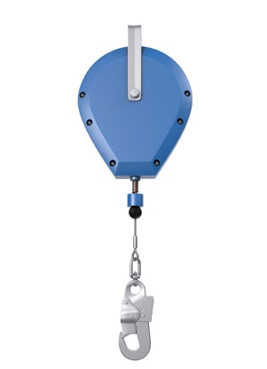 |
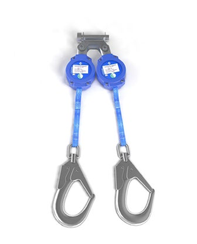 |
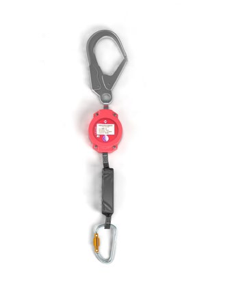 |
Abb. 41 Höhensicherungsgerät mit Verbindungsmittel aus Drahtseil |
Abb. 42 Beispiel für eine Kombination aus zwei an einer Auffangöse parallel verwendbaren Höhensicherungsgeräten (Twin-HSG) |
Abb. 43 Beispiel für ein Höhensicherungsgerät, ausgestattet mit einem energieabsorbierenden Element (Falldämpfer) im ein- und ausziehbaren Verbindungsmittel |
Mitlaufende Auffanggeräte einschließlich fester Führung sind Bestandteile eines Auffangsystems. Sie werden in Verbindung mit einem Auffanggurt mit geeigneter vorderer Auffangöse an Verkehrswegen zum Steigen in Höhen und Tiefen eingesetzt. Die festen Führungen, bestehend aus einer Schiene oder einem Drahtseil, sind in der Regel an den Verwendungsorten, wie z. B. Steigleitern an Antennenmasten, Schornsteinen, Windenergieanlagen, Hochregallager und Schächten, fest installiert (siehe Abbildungen 49 und 50). Für den Steigvorgang wird oder ist bereits ein mitlaufendes Auffanggerät an der Führung angefügt. Das Auffanggerät, verbunden mit der entsprechenden Auffangöse des Auffanggurtes, begleitet ohne manuelle Betätigung die steigende Person. Im Sturzfall arretiert es an der Führung und verhindert so den Absturz der Person.
Für das Auf- bzw. Absteigen ist generell eine Entriegelung der Sperrvorrichtung (verhindert das Abrutschen des Gerätes an der Führung) des Auffanggerätes erforderlich. Dies erfolgt ohne manuelle Betätigung der steigenden Person entweder mit oder ohne horizontale Zugkraft, die z. B. durch Zurücklehnen beim Steigen aufgebracht wird. In der Praxis werden vorzugsweise mitlaufende Auffanggeräte benutzt, die mit horizontaler Zugkraft entriegelt werden. Bei engen Umgebungsbedingungen, wie z. B. in Schächten, haben sich dagegen Auffanggeräte bewährt, die ohne horizontale Zugkraft entriegelt werden.
Befinden sich Ein- bzw. Ausstiegsstellen in einem absturzgefährdeten Bereich ist darauf zu achten, dass die Führungen mit Endsicherungen ausgestattet sind, die ein unbeabsichtigtes Herauslaufen des mitlaufenden Auffanggerätes verhindern (siehe Abbildung 7).
Sind Auffanggeräte so gestaltet, dass sie an der Schiene/dem Drahtseil angefügt und davon wieder gelöst werden können, muss anhand der Kennzeichnung des Auffanggerätes, der Führung und den Angaben in deL Gebrauchsanleitung eine eindeutige Zuordnung möglich sein (siehe Abbildungen 44 und 45).
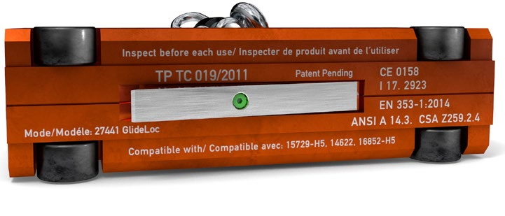 |
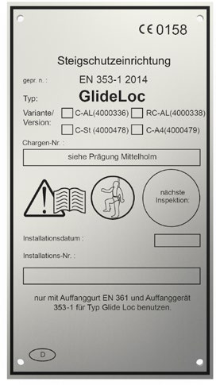 |
Abb. 44 Kennzeichung eines Auffanggerätes (Typ GlideLoc) |
Abb. 45 Kennzeichnungsschild für die Führung (Typ GlideLoc) |
Die Ausführung der Verbindung von vorderer Auffangöse des Auffanggurtes und Auffanggerät ist vom Hersteller vorgegeben und darf nicht verändert werden.
Es gibt Auffanggeräte, die mit zwei vorderen Auffangösen (am Bauchgurt und im oberen sternalen Bereich) verbunden werden müssen (siehe Abbildung 46).
Hinweis: Sitzgurte nach DIN EN 813 bzw. die Positionierungsösen der in Auffanggurten integrierten Sitzgurtfunktion sind nicht für Auffangzwecke konzipiert und dürfen nicht verwendet werden. Es besteht die Gefahr des Versagens der Öse bei einem Auffangvorgang. Zudem kann die Position der Öse zu einer ungünstigen Hängeposition führen.
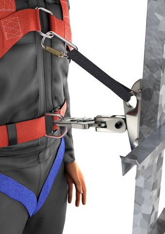 |
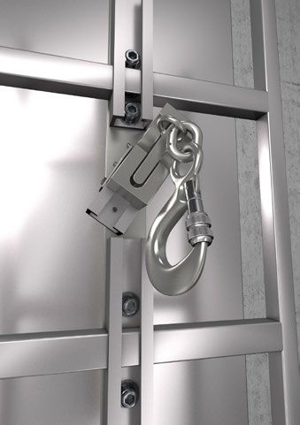 |
Abb. 46 Beispiel für ein mitlaufendes Auffanggerät, |
Abb. 47 Beispiel für eine Einsetz- bzw. |
Die Ausstattung der festen Führungen ist je nach Hersteller mit folgenden Zubehörteilen möglich:
Hinweis: Wird Steigschutz mit einer Steighilfe (siehe Abbildung 48) verwendet, ist darauf zu achten, dass für die Steighilfe eine Konformität zur Maschinenrichtlinie bescheinigt und die sichere Funktion des Steigschutzes nicht beeinträchtigt wird.
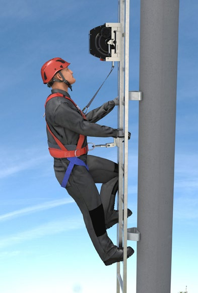 |
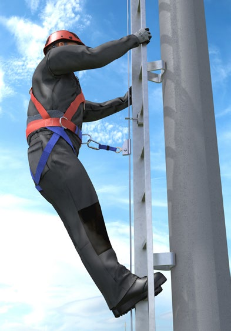 |
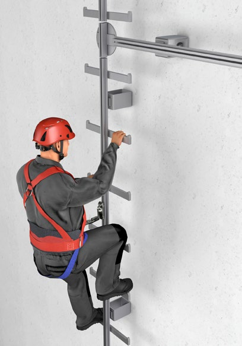 |
Abb. 48 Steigschutz ausgerüstet mit einer Steighilfe |
Abb. 49 Beispiel einer Steigschutzeinrichtung mit Führung aus Stahldrahtseil |
Abb. 50 Beispiel für eine Steigschutzeinrichtung, bestehend aus einer vertikalen und einer horizontalen Führung (Übergang mit Weiche) |
Es gibt selbstschließende und selbstverriegelnde (siehe Abbildungen 51a und 51b) oder manuell verriegelbare (siehe Abbildungen 52a und 52b) Verbindungselemente (z. B. Karabinerhaken).
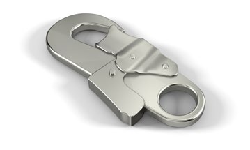 |
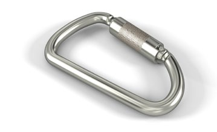 |
Abb. 51a Beispiel für ein selbstverriegelndes Verbindungselement mit Einhandbetätigung (Druckverschluss) |
Abb. 51b Beispiel für ein selbstverriegelndes Verbindungselement mit Einhandbetätigung (Drehverschluss) |
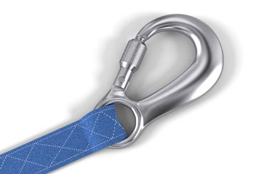 |
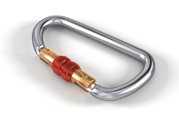 |
Abb. 52a Beispiel für ein manuell verriegelbares Verbindungselement mit Überwurfmutter als Verschlusssicherung in einem Verbindungsmittel integriert |
Abb. 52b Beispiel für ein manuell verriegelbares Verbindungselement mit Überwurfmutter als Verschlusssicherung |
Die Verwendung von selbstverriegelnden Verbindungselementen, ausgestattet mit einem selbstschließenden Verschluss und einer automatischen Verschlusssicherung, ist zu empfehlen. Dies gilt besonders, wenn die Verriegelung während eines Arbeitstages sehr häufig geöffnet und geschlossen werden muss.
Bei der Auswahl von Verbindungselementen ist darüber hinaus z. B. zu berücksichtigen:
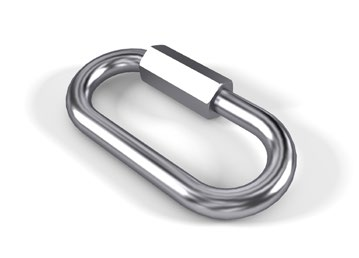 |
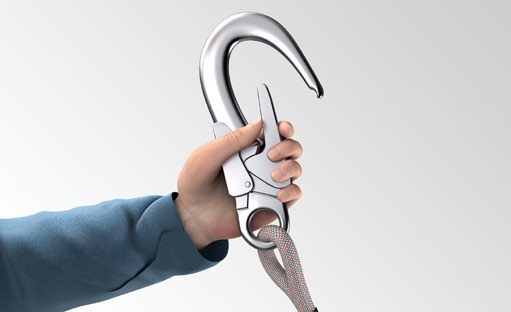 |
Abb. 53 Beispiel für ein nicht selbstschließendes Schraubverbindungselement |
Abb. 54 Beispiel für ein Verbindungselement mit großer Öffnungsweite und Einhandbetätigung |
Bei der Auswahl der Verbindungselemente ist auf die Abstimmung der Öffnungsweite des Verschlusses mit dem Anschlagpunkt zu achten.
Nicht selbstschließende Schraubverbindungselemente sind nur für dauerhafte Verbindungen geeignet und nur zulässig, wenn die Verschraubung dauerhaft gegen Öffnen gesichert ist (siehe Abbildung 53).
Zur Verbindung von Verbindungselementen eines Auffangsystems mit Anschlagmöglichkeiten größerer Abmessungen können Bandschlingen (siehe Abbildungen 58 und 80) oder auch Anschlagverbindungselemente (siehe Abbildung 55) eingesetzt werden.
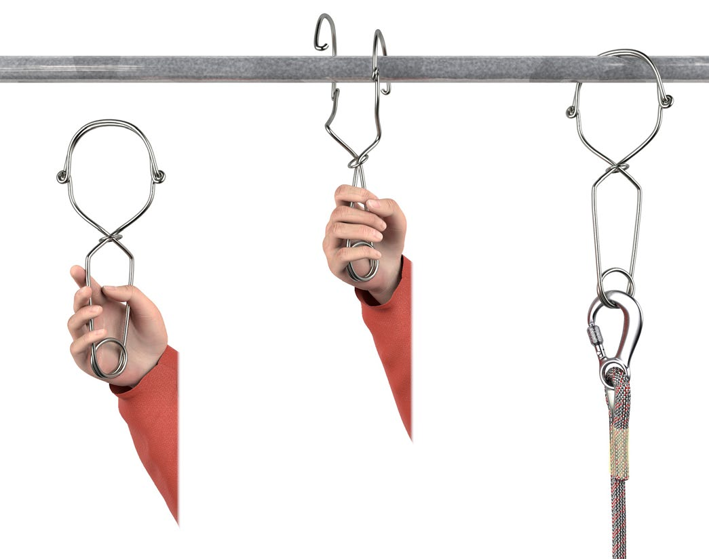
Abb. 55 Beispiel für ein Anschlagverbindungselement
7.14.1 Anschlageinrichtungen können ein Bestandteil des Befestigungssystems der PSA gegen Absturz sein oder die lasttragende Verbindung der PSA gegen Absturz mit dem Bauwerk oder anderen Objekten darstellen.
Insofern werden zwischen dauerhaft am Gebäude, der Struktur oder anderen Objekten befestigten und nicht für eine dauerhafte Befestigung vorgesehene Anschlageinrichtungen unterschieden (siehe Abbildungen 56 und 57). Darüber hinaus können auch ausreichend tragfähige Bestandteile von baulichen Einrichtungen als temporär genutzte Anschlagmöglichkeit verwendet werden (siehe Abbildung 58).
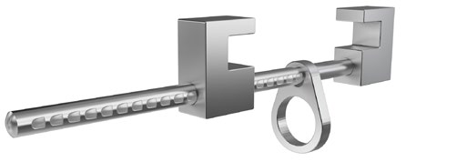 |
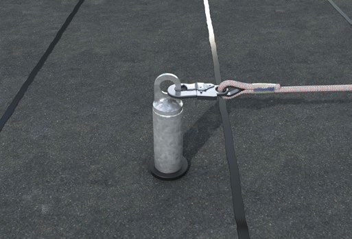 |
Abb. 56 Beispiel einer Anschlageinrichtung, die nicht für eine dauerhafte Befestigung vorgesehen ist (Trägerklemme) |
Abb. 57 Beispiel einer Anschlageinrichtung, die dauerhaft am Bauwerk befestigt ist (Einzelanschlagpunkt-Stahlrohrstütze). |
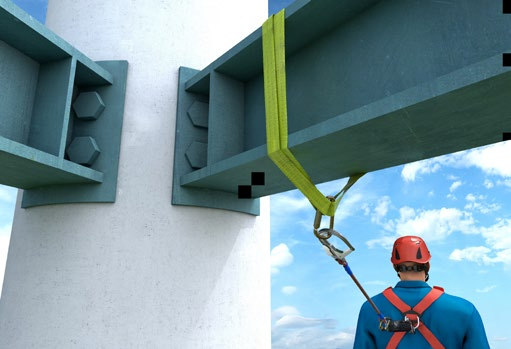 |
Abb. 58 Beispiel einer temporär genutzten Anschlagmöglichkeit (Stahlträger) |
Die Anforderungen an Anschlageinrichtungen basieren generell auf der Einwirkung durch den Lastfall "Auffangen" (6 kN, siehe Abschnitt 5.1) und berücksichtigen die Verwendung in/mit allen persönlichen Absturzschutzsystemen nach DIN EN 363. Aus Gründen der Verwechselungsgefahr gibt es keine davon abweichenden Anforderungen für Anschlageinrichtungen zur Benutzung z. B. mit Rückhalte-, Arbeitsplatzpositionierungs- oder Rettungssystemen.
Hinweis: Hilfestellungen für die sachgerechte Planung von Anschlageinrichtungen enthält die DGUV Information 201-056 "Planungsgrundlagen von Anschlageinrichtungen auf Dächern".
7.14.2 Anforderungen an Anschlageinrichtungen, die als Bestandteil des Befestigungssystems der PSA gegen Absturz dafür vorgesehen sind, von der baulichen Einrichtung wieder entfernt zu werden, sind u. a. in DIN EN 795 geregelt. Solche Anschlageinrichtungen fallen unter die Definition der PSA und sind somit entsprechend zu prüfen (EU-Baumusterprüfung) und zu kennzeichnen (siehe Abschnitt 3.2 und 3.3). Sind diese für eine Benutzung durch mehrere Personen gleichzeitig vorgesehen, gilt es zusätzlich die Anforderungen gemäß DIN CEN/TS 16415 zu beachten.
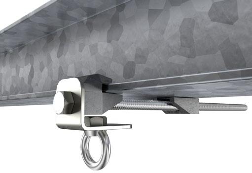 |
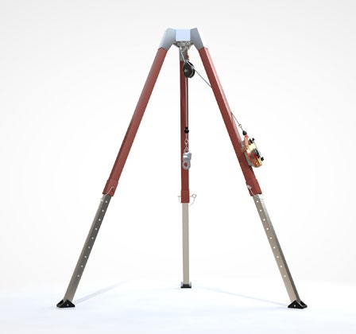 |
Abb. 59 Beispiel für eine Anschlageinrichtung Typ B DIN EN 795 – Trägerklemme |
Abb. 60 Beispiel für eine Anschlageinrichtung Typ B DIN EN 795 – Dreibein |
Hinweis: Vor der Befestigung eines Höhensicherungsgerätes an einem Bein der Anschlageinrichtung ist sicherzustellen, dass sowohl das Höhensicherungsgerät als auch das Dreibein für diese Verwendung vorgesehen sind. Angaben hierzu sind aus den Gebrauchsanleitungen zu entnehmen.
Hinweis: Häufig werden auch Dreibeine neben der Verwendung mit einem Höhensicherungsgerät zusätzlich mit Lasten- und/oder Personenwinden ausgestattet. Hier gilt es zu beachten, dass vom Hersteller die Konformität zur Maschinenrichtlinie und die Brauchbarkeit für diese Kombination bescheinigt werden.
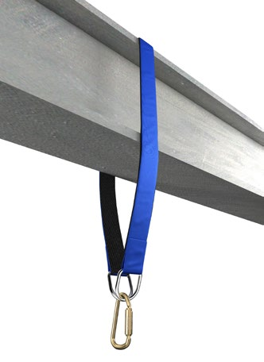 |
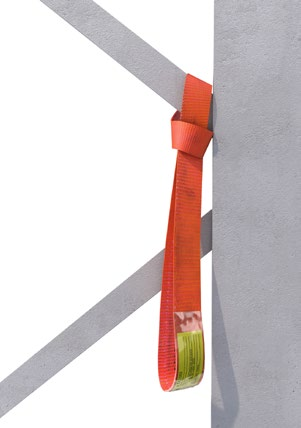 |
Abb. 61a (rechts) und 61b (links) |
Aufgrund unterschiedlicher Tragfähigkeiten ist die richtige Anschlagart der Bandschlinge gemäß Gebrauchsanleitung zu beachten.
Hinweis: Wenn die Bandschlinge überstiegen wird, ist darauf zu achten, dass durch die Anschlagart keine Vergrößerung der Fallstrecke für das verwendete Auffangsystem entsteht.
Bandschlingen empfehlen sich auch für die Einrichtung von Anschlagpunkten für die Rettung aus Steigschutzeinrichtungen bzw. zur Positionierung für Inspektionen und Wartungen an Steigleitern. Zur Sicherstellung einer korrekten Lasteinleitung in die Steigleiter werden die dargestellten Ausführungen empfohlen (siehe Abbildungen 62 und 63, siehe auch DGUV Information 208-032 "Auswahl und Benutzung von Steigleitern").
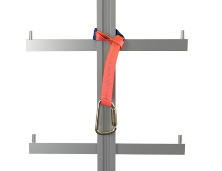 |
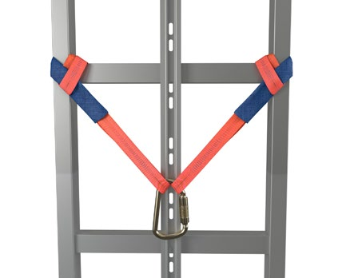 |
Abb. 62 Anschlagpunkt an einer Steigleiter mit Mittelholm mittels Bandschlinge |
Abb. 63 Anschlagpunkt an einer Steigleiter mit Seitenholmen mittels zwei Bandschlingen |
Abb. 64 Beispiel für eine durch Eigengewicht gehaltene
Anschlageinrichtung gemäß Typ E DIN EN 795
in Abhängigkeit von der Neigung der Auflagefläche (maximal 5 Grad) und deren Oberflächenbeschaffenheit (z. B. ausreichende Reibung) sowie den Witterungsbedingungen (z. B. Frost).
Abb. 65 Beispiel für eine nicht dauerhaft befestigte
Anschlageinrichtung vom Typ A DIN EN 795
Abb. 66 Skizze einer nicht dauerhaft befestigten
Anschlageinrichtung vom Typ C DIN EN 795 (LifeLine)
Abb. 67 Beispiel für eine nicht dauerhaft befestigte
Anschlageinrichtung vom Typ C DIN EN 795 (LifeLine)
Abb. 68 Beispiel für eine nicht dauerhaft befestigte Anschlageinrichtung
vom Typ D DIN EN 795 (Schiene mit mobilen Anschlagpunkt)
Für die Anschlageinrichtungen vom Typ C und D müssen Baumusterprüfungen nach DIN EN 795 durchgeführt sein.
7.14.3 Anschlageinrichtungen, die dafür vorgesehen sind, dauerhaft an der baulichen Einrichtung/am Objekt zu verbleiben, sind z. B. Ringösen, Seilsysteme und Schienensysteme.
Es ist darauf zu achten, dass sicherheitstechnische Nachweise für diese Anschlageinrichtungen unter Einbeziehung der Befestigung mit dem Untergrund oder der Struktur geführt wurden (z. B. Baumusterprüfung in Anlehnung an DIN EN 795 oder DIN CEN/TS 16415). Dies ist zudem für die Gewährleistung einer sachgerechten Montage wichtig. Darüber hinaus sollte die Montage entsprechend der Herstellervorgaben durchgeführt und dokumentiert sein (Errichterbescheinigung/Einbauerklärung). Dies ist wichtig für die Gebäudebetreiber (siehe DGUV Information 201-056 "Planungsgrundlagen von Anschlageinrichtungen auf Dächern" bzw. Fachinformation "Durchführung von Sachkundigenprüfungen an Anschlageinrichtungen") sowie für Benutzer und Benutzerinnen als Nachweis für eine ordnungsgemäße Montage und Voraussetzung/Grundlage für die spätere sachkundige Überprüfung der Anschlageinrichtung. In diesem Zusammenhang empfiehlt es sich, das Datum der Montage auf der Anschlageinrichtung anzubringen.
Abb. 69a Beispiel für eine permanente Anschlageinrichtung
mit einem Einzelanschlagpunkt an einer Lichtkuppel
Abb. 69b Beispiel einer Ringöse in einer Wand als permanente
Anschlageinrichtung mit einem Einzelanschlagpunkt
Abb. 70 Beispiel für eine dauerhaft befestigte
Anschlageinrichtung mit horizontalem Seil
Hinweis: Die Funktion des Höhensicherungsgerätes kann durch das Nachgeben der Seilführung der Anschlageinrichtung beim Auffangvorgang beeinträchtigt werden. Deshalb ist vor der Benutzung eines Höhensicherungsgerätes an einer Anschlageinrichtung mit einem horizontalen Seil sicherzustellen, dass das Höhensicherungsgerät für diese Verwendung geeignet ist. Angaben hierzu sind der Gebrauchsanleitung des Höhensicherungsgerätes zu entnehmen.
Abb. 71 Beispiel für eine dauerhaft installierte Anschlageinrichtung
bestehend aus einer Schiene mit einem beweglichen Anschlagpunkt
Hinweis: Anschlageinrichtungen mit horizontalen Führungen (Schiene, Seil) und beweglichen Anschlagpunkten, die Zwischenhalterungen überfahren können ohne von der Führung gelöst zu werden, sind gegenüber den Anschlageinrichtungen, bei denen das Verbindungselement zum Feldwechsel gelöst werden muss, vorzuziehen.
7.14.4 Für den Einbau und die Anwendung von auflastgehaltenen Anschlageinrichtungen (siehe Abbildungen 72 und 73) ist zu beachten, dass die im Rahmen der Nachweise (z. B. Baumusterprüfungen) vorgegebenen Randbedingungen u. a. für die Auflast (z. B. Art und Schichthöhe des Substrats), für den Untergrund (z. B. Ausführung, Neigung) sowie für die Witterungsbedingungen (z. B. Nässe/Frost) mit den Bedingungen am Einbauort/Verwendungsort übereinstimmen und ein mängelfreier Zustand der Anschlageinrichtung gegeben ist. Die wesentlichen Angaben dazu sind üblicherweise in der Einbauanleitung und der Gebrauchsanleitung der Anschlageinrichtung aufgeführt.
Abb. 72 Beispiel für eine auflastgehaltene Anschlageinrichtung |
Abb. 73 Beispiel für eine auflastgehaltene |
7.14.5 Als Anschlageinrichtung auf geneigten Dachflächen können Einzeltritte nach DIN EN 516 und Sicherheitsdachhaken nach DIN EN 517 (siehe Abbildung 74) verwendet werden.
Abb. 74 Beispiel eines Sicherheitsdachhakens als Anschlageinrichtung
Bei der Benutzung ist darauf zu achten für welche Nutzungsrichtung der Sicherheitsdachhaken ausgelegt ist. Die Lastrichtung ist an der Kennzeichnung zu erkennen.
Typ A: Sicherheitsdachhaken zur Aufnahme von Zugkräften, die in Richtung der Falllinie der Dachfläche einwirken.
Typ B: Sicherheitsdachhaken zur Aufnahme von Zugkräften, die sowohl in Richtung der Falllinie, entgegen der Fallrichtung (y-Achse) als auch senkrecht dazu und parallel zur Dachfläche Richtung Ortgang einwirken.
7.14.6 Anschlagmöglichkeiten an Teilen baulicher Anlagen sind temporär benutzte Stellen zum Befestigen von persönlichen Absturzschutzsystemen.
Geeignete Anschlagmöglichkeiten können zum Beispiel sein:
Solche Anschlageinrichtungen sind z. B. dann geeignet, wenn sich das befestigte Auffangsystem nicht von der Anschlageinrichtung lösen kann und die Tragfähigkeit für eine Person nach den technischen Baubestimmungen für eine Kraft von 6 kN eingeleitet in die Konstruktion durch den Auffangvorgang, einschließlich den für die Rettung anzusetzenden Lasten (z. B. Gewicht der aufgefangenen Person), nachgewiesen ist. Für jede weitere Person ist die Kraft um 1 kN bzw. sind die Lasten entsprechend zu erhöhen.
Anschlagmöglichkeiten, bei denen ein unbeabsichtigtes Lösen des Auffangsystems möglich ist, z. B. offener Haken, freie Rohr- bzw. Trägerenden, sind ungeeignet.
Hinweis: Transportösen an Maschinen und Bauteilen sind nicht geeignet, da eine Vorschädigung durch den Transport nicht ausgeschlossen werden kann.
7.14.7 Darüber hinaus gibt es noch spezielle Informationen für Anschlageinrichtungen, z. B. an Gerüsten, Hubarbeitsbühnen, Windenergieanlagen, die es zusätzlich zu beachten gilt.